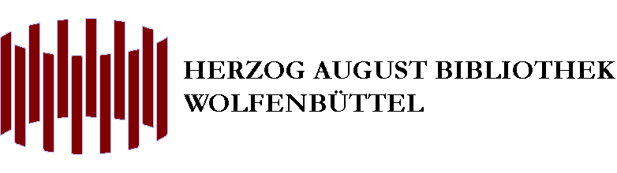
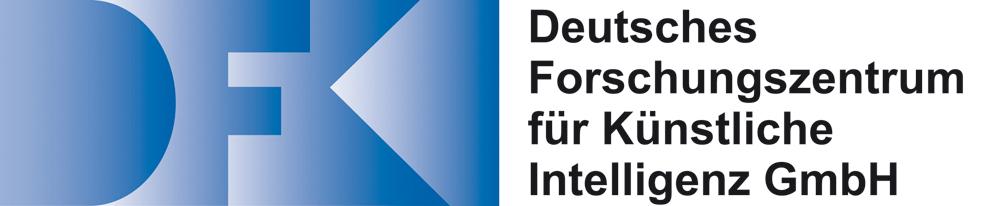
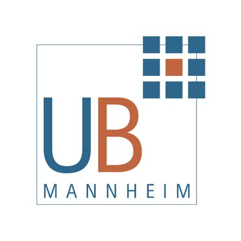
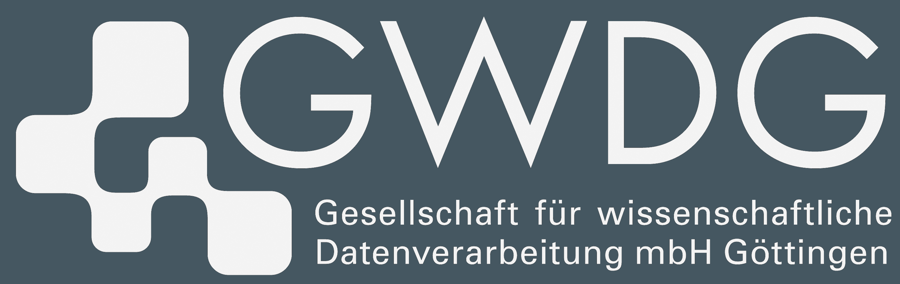

An open-source framework for integrating multi-source layout and text recognition tools into scalable OCR workflows
Kay-Michael Würzner
Konstantin Baierer
Bibliotheca Baltica 2018 Rostock, 2018-10-05
https://ocr-d.github.io/2018-10-05-baltica/
https://ocr-d.github.io/2018-10-05-baltica/slides.pdf
Overview
- The situation
- OCR-D process
- Architecture
- State of OCR-D tools
- Scalability
Users want text data
massive amounts
structured
easily accessible
Libraries provide text data
large amounts
unstructured
hard to access
Why the discrepancy?
Underspecified requirements on OCR by funders and users
OCR of historical data of little economic interest
Little competition
Academical solutions non-sustainable
Inflexible workflows
The OCR-D initiative
DFG-organized expert Workshop (2014)
Verfahren zur Verbesserung von OCR-Ergebnissen
Result: A concerted effort for improving OCR is seen as required.
OCR-D Coordination project
| |
|
|  |
Phase 1: Exploring the domain (2015-2017)
Surveyed (open-source) ecosystem
around OCR and OLR
Identified Tasks
Prepared call for proposals for DFG
Phase 2: Module project stage (2018-2019)
|  |
 |
 |  |
|  |
Phase 3: Going productive (2018-2020)
Integrate with existing digitization workflow software, e.g. Kitodo
Make OCR-D-developed software uniformly deployable
Advise DFG on OCR requirements for "Praxisrichtlinien"
"Multi source"
existing tools by OCR-D partners
(tesseract, PoCoTo, LAREX...)
new developments within OCR-D
(font identification, post-correction...)
existing tools outside OCR-D
(ocropus, kraken, ScanTailor, OLENA...)
😍 Modular 😍
😭 Monolithic 😭
Specification
+
Implementation
OCR-D/spec
METS + PAGE-XML (+ ALTO)
Structured tool descriptions
Command line interface
HTTP interface
OCR-D/core
Validation and helper functions
Python library
Shell library
Why Python?
Python widely used in computer vision and machine learning
(keras, pytorch...)
Wrapping existing tools with minimal friction
(ocropus, kraken ...)
Bindings for low-level APIs
(opencv, tesserocr ...)
Why shell?
Lowest common denominator
Wrap arbitrary command line tools
Process callout possible in every
framework/workflow engine/programming environment
State of the OCR-D toolset
Preprocessing
| Tool | Developer | Functionality | Wrapper |
|---|---|---|---|
| anyOCR | DFKI Kaiserslautern | binarization, cropping, deskewing, dewarping | (python) |
| OLENA | OCR-D | binarization | shell |
| tesseract | UB Mannheim, ASV Leipzig |
binarization | python |
| OCRopus | OCR-D | binarization | python |
| kraken | OCR-D | binarization | python |
| ImageMagick | OCR-D | binarization, conversion | shell |
Layout recognition
| Tool | Developer | Functionality | Wrapper |
|---|---|---|---|
| anyOCR | DFKI Kaiserslautern | block+line seg8n, block class7n, document analysis | (python) |
| LAREX | Uni Würzburg | block+line seg8n, block class7n | (shell) |
| OCRopus | OCR-D | line seg8n | python |
| kraken | OCR-D | line seg8n | python |
| tesseract | UB Mannheim, ASV Leipzig |
block+line seg8n | python |
| dh_segment | OCR-D | block+line seg8n | (shell) |
Text recognition
| Tool | Developer | Functionality | Wrapper |
|---|---|---|---|
| OCRopus | OCR-D | text recognition | python |
| kraken | OCR-D | text recognition | python |
| tesseract | UB Mannheim, ASV Leipzig |
text recognition | python |
| calamari | OCR-D | text recognition | (python) |
| ocrad | OCR-D | text recognition | (shell) |
Postprocessing
| Tool | Developer | Functionality | Wrapper |
|---|---|---|---|
| corASV | ASV Leipzig | post correction | (python) |
| PoCoTo | CIS München | post correction | python |
| keraslm | OCR-D | post correction | python |
| ocrevalUAtion | OCR-D | evaluation | (shell) |
Open Source is more than "Open Source"
Best Practices
Transparency from day one
Unit tests
Unified test assets
Continuous Integration
Semantic versioning
Docker base image
Releases to GitHub, PyPI, DockerHub
OCR-D/docs
Developer documentation
User documentation
"Cookbook"
Documentation Documentation
Community
Issues
Pull requests
Code review
Support chat
Scalability
Geared towards real digitization scenarios
Cooperation with Kitodo and commercial providers
Frequent reality check with current practices ("Pilotbibliotheken")
Different deployment options
Modularity + uniform interfaces
⇒
Adaptive workflows
(Instantiation and composition up to users)